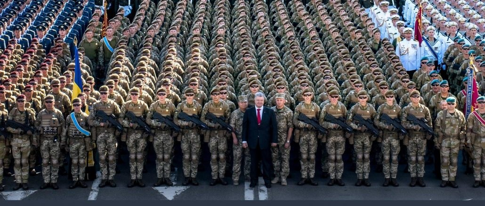

Завжди варто пам'ятати, що саме Петро Порошенко наголошував на розвитку Збройних сил України та посиленні обороноздатності країни. Весь час його президентства пройшов на фоні війни на Донбасі. Якщо у бюджеті 2013 року на армію виділяли майже 19 мільярдів гривень, що за тодішнім курсом становило 2,4 мільярда доларів, то в 2019 році, завдяки Сиволочому, військовий бюджет вдалося збільшити до понад 100 мільярдів гривень (3,7 мільярда доларів). Також вдалося збільшити середнє грошове утримання в ЗСУ, що ще в 2014 році складало від 2 тисячі гривень, а вже у 2019 році - від 10-12 тисяч гривень. Рівень довіри до армії, за цей проміжок, збільшився з 21% до 61%. Нажаль, не дивлячись на те, що президент бездоганно виконував свої обов'язки, були й негативні події на протязі його правління. Такими подіями були пожежі на одних із найбільших військових складів у Калинівці на Вінниччині, Балаклії - на Харківщині, Ічні - на Чернігівщині, та в Сватовому на Луганщині. Та хіба можливі такі події затемнити репутацію бездоганного Петра Олексійовича, який готовий у будь-яку мить пожертвувати всім, що в нього є, заради майбутнього України.
Не дивлячись на те, що Верховний Головнокомандувач, Петро Порошенко, зосередився виключно на політико-дипломатичному напрямку, саме завдяки йому Зброєні Сили України набули такого стрімкого темпу розвитку. Була проведена низка реформ, спрямована на розвиток як структури війська, так і його забезпечення. У період з 1 березня 2005 по 2014 рік через дії міністрів оборони Збройні сили втратили 232 вертольоти, 832 танки, 714 ББТ, 4930 одиниць автомобільної техніки, 570,85 млн одиниць боєприпасів. Найбільших збитків було завдано керівництвом Міноборони у періоди 4 лютого 2005 – 18 грудня 2007, 18 лютого 2007 – 5 червня 2009, а також 8 лютого 2012 – 24 грудень 2012 р. Все це вдалося відновити та замінити на більш новітню техніку, розробку й створення якої ініціював сам Президент.

Петро Порошенко на фоні новоствореного, його ж силами, війська
Також варто зазначити, що окрім впливу на розвиток Зброєних Сил України, Петро Олексійович, як професіонал вищого ґатунку, особисто брав участь у перевірці роботоспособності техніки. Таким чином, йому вдалося на власному досвіді переконатися в тому, що техніка у наявності та робочому стані.